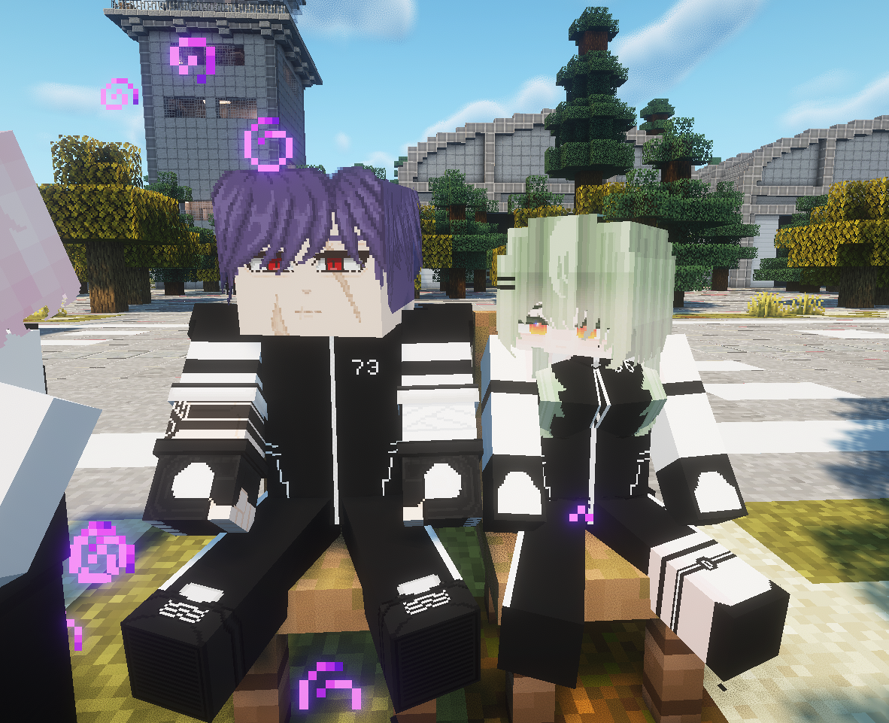
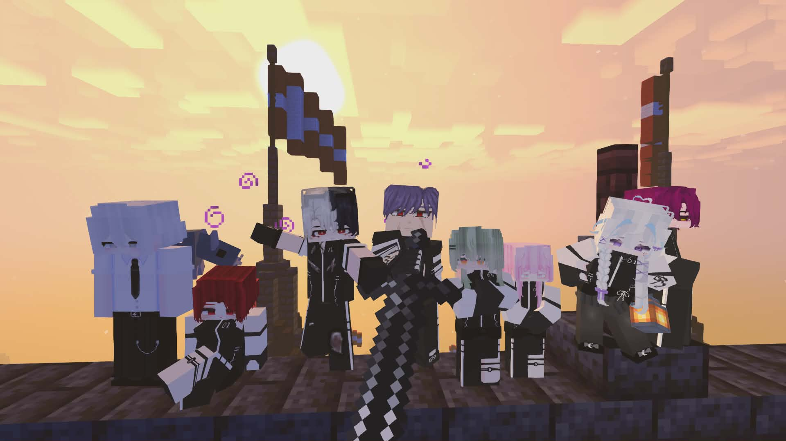
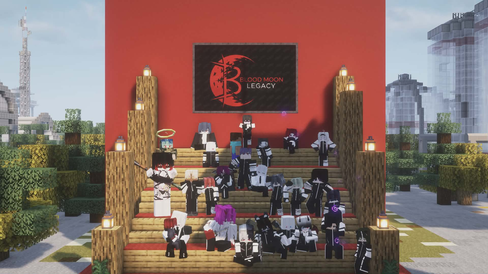
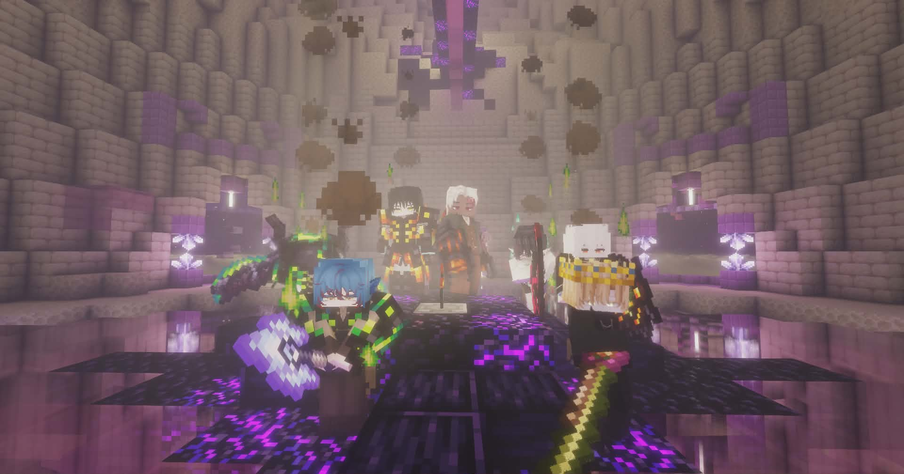
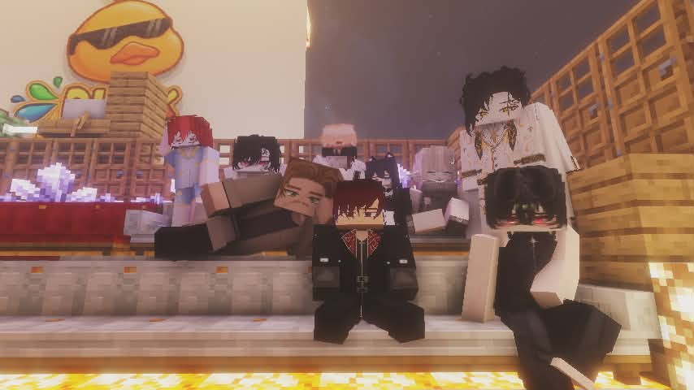

WELCOME TO DUSK COMMUNITY
โปรเจกต์เซิร์ฟเวอร์ Minecraft Roleplay ขนาดยักษ์ที่สร้างขึ้นจากความหลงใหล มุ่งมั่นมอบประสบการณ์การใช้ชีวิตเสมือนจริงที่เข้มข้นและแปลกใหม่ที่สุดให้กับคุณ
เป้าหมายและจุดยืนของพวกเรา
Our Concept
มิติใหม่แห่งการ Roleplay สมจริง เนื้อเรื่องเข้มข้น และให้อิสระกำหนดบทบาทชีวิตตัวเองได้อย่างเต็มที่
Custom Features
ขับเคลื่อนด้วยแมพและระบบ Mod พร้อมระบบเอาตัวรอดสุดท้าทาย
Safe Community
ชุมชนที่เป็นมิตร พื้นที่ปลอดภัยสำหรับเกมเมอร์ทุกคน พร้อมทีมงานดูแลซัพพอร์ตตลอด 24 ชั่วโมง
Our Vision
โปรเจกต์ระยะยาวที่พร้อมอัปเดตฟีเจอร์ใหม่ ๆ ตามคำแนะนำของผู้เล่นในทุกซีซัน
GAME VERSION
Java 1.20.1 (Forge)
SERVER CONCEPT
Survival Horror Roleplay / Story
ACCESS STYLE
Whitelist & Launcher
ความทรงจำและบรรยากาศภายในเซิร์ฟเวอร์




